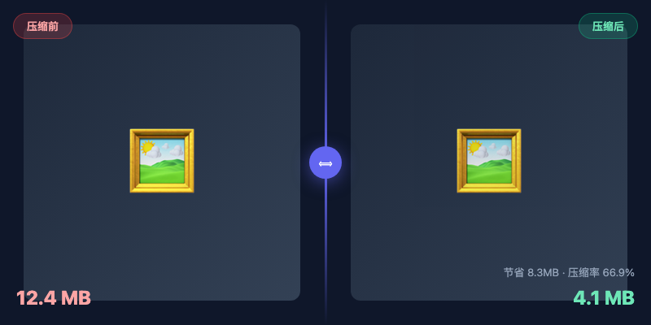
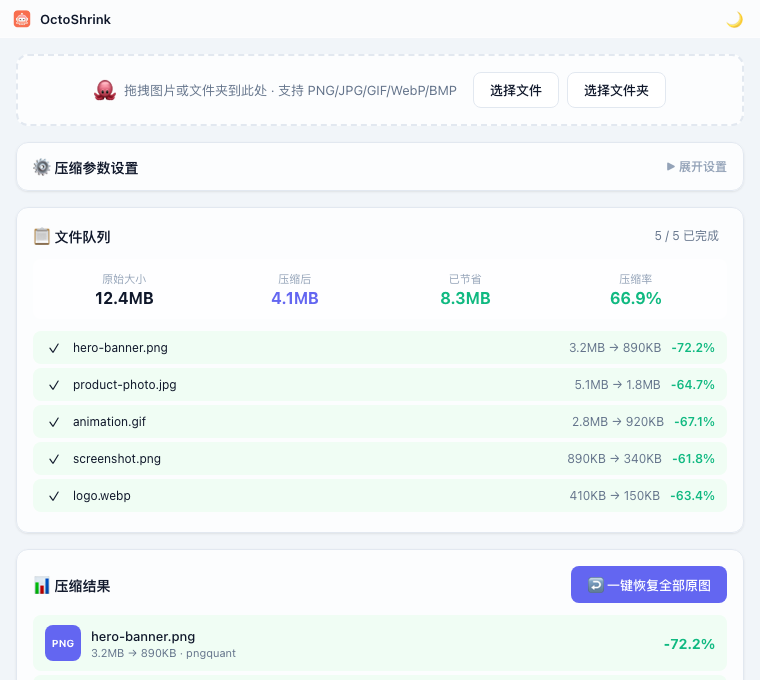
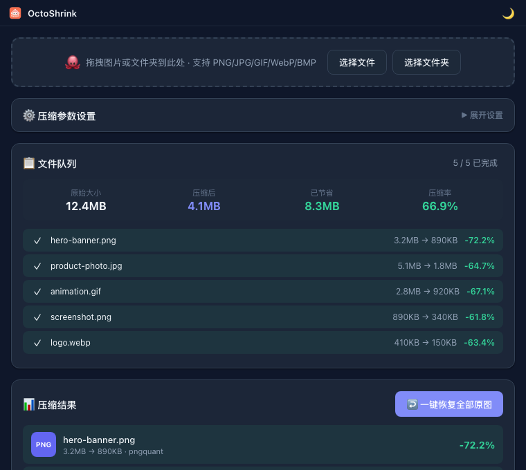

LOCAL / 001
OCTO.SHRINK
拖拽图片或文件夹到此处
压缩结果5 / 5 已完成
原始大小12.4MB
压缩后4.1MB
已节省8.3MB
PNGhero-banner.png-72.2%
JPGproduct-photo.jpg-64.7%
GIFanimation.gif-67.1%
0 uploads素材留在本机
✓
−66.9%文件体积
压缩应该
不添麻烦
不添麻烦
18MB轻量应用体积
3×桌面平台支持
7内置压缩引擎
0图片上传
WHY OCTOSHRINK
少一点等待，
多一点专注。
把常用的压缩工具装进一个安静、顺手的桌面工作流里。你只需要拖入，剩下的交给章小压。
你的图片，
不必离开你的电脑。
没有上传、没有等待下载，也没有第三方服务器。私密素材就该在自己的机器上处理。
小一点，
看起来一样好。
压缩前后滑动对比，确认每一次变小都值得。
从常见格式，
到下一代格式。
支持 PNG、JPG、GIF、WebP、BMP，并可输出 WebP、AVIF、JPEG、PNG。
OCTOSHRINK / LOCAL ENGINERUNNING
01input→your-folder/
02engine→on-device
03output→smaller-files/
no remote requestprivacy by default
keep
it
local✦
it
local✦
A QUIET PROMISE
轻量，
也可以很认真。
在线工具很方便，但不是所有图片都适合上传。章小压把常用引擎和参数藏在后台，让你不用配环境、不用记命令，也不必把素材交给陌生服务器。
↳
开箱即用不需要额外安装 Homebrew 或 CLI 工具
↳
可控的输出覆盖、加后缀或输出到指定目录
↳
不满意就恢复覆盖前自动备份，随时还原原图
SEE THE DIFFERENCE
变小的同时，
保留值得的。
每张图片都值得先看一眼。章小压让压缩结果变得可见，而不是一个盲盒。
压缩力度66%
更保真更小体积

THE INTERFACE
简单到，不用说明书。
安静的界面、清楚的队列、即时的结果。亮色和暗色，都为长时间工作而生。


READY WHEN YOU ARE
给你的图片，
留一点呼吸。
免费、开源、本地运行。下载章小压，把下一批图片变轻。
macOSWindowsLinuxMIT License